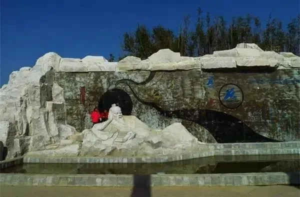
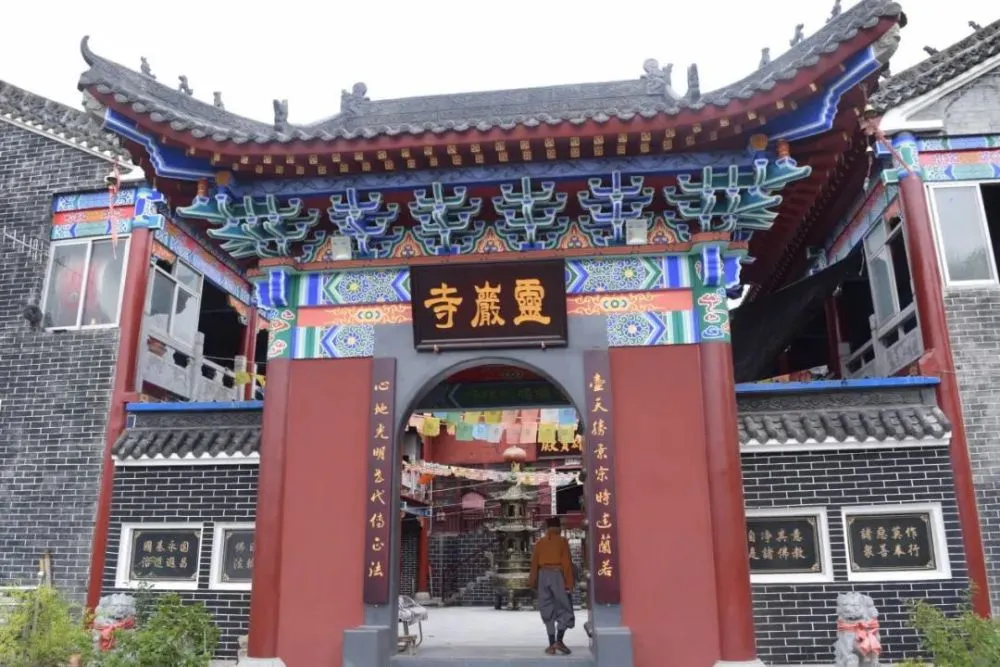
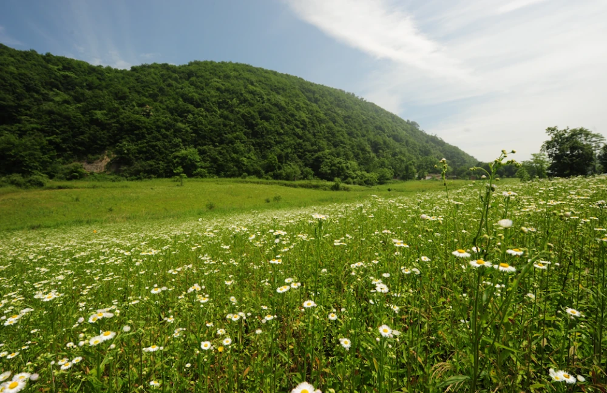
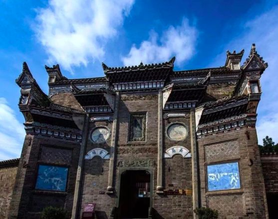
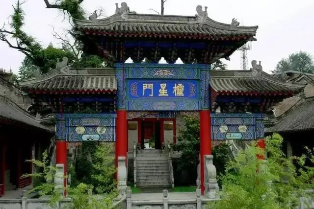
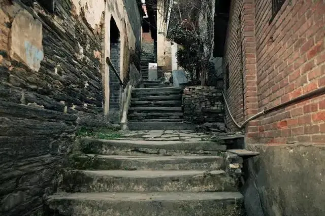
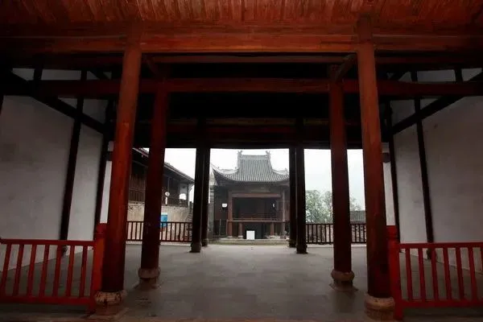
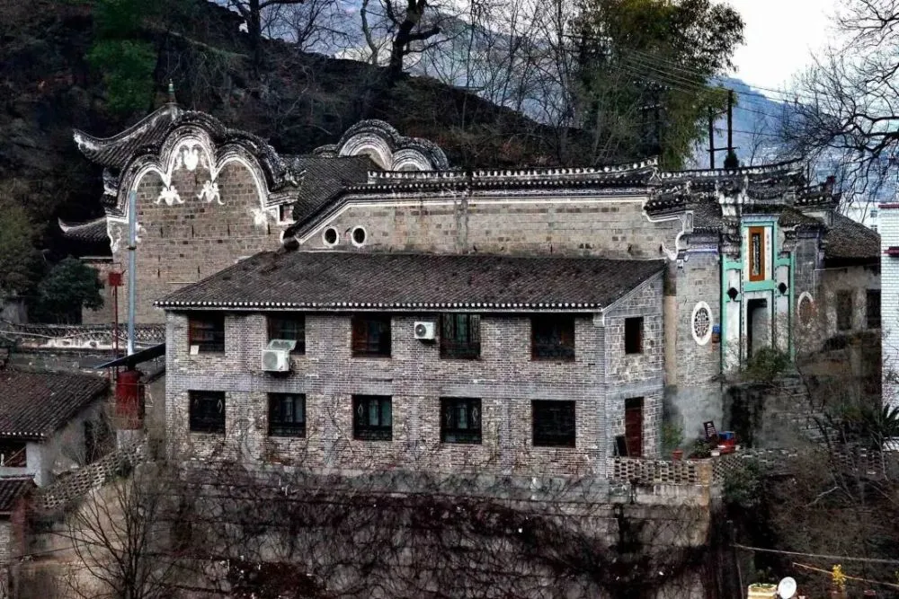
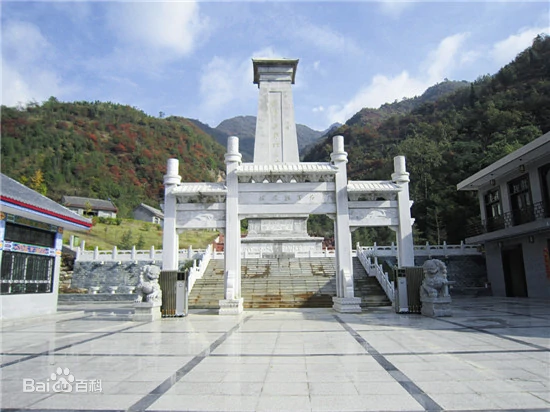

风景名胜
-

太极城森林公园，是旬阳市委、市政府确定的重点建设项目，是以 “太极城”为历史文脉，以开发历史产、改善区域生态环境和人居环境为宗旨，以森林景观为主体，集游览观光、休憩度假、文化展示、科普保、娱健身等多功能于一体，具有独特的自然景观资源和丰富的人文景观资源的生态型城市森林公园。
-

灵崖寺建在一座东临汉江、西依旬河的陡峭的石山上。古称临崖，后因盛产灵芝便改名灵崖。宋绍兴六年，僧人明显在此山上建造寺院，因山取名灵崖寺。它与老城隔河相望，是一处佛教胜地。灵岩寺现有山门，大殿三间，僧房八间，庭院里红墙绿草，环境幽雅。周边森林茂密，风景秀丽。附近的人文地理也比较丰富，现已辟为森林公园。
-

羊山生态旅游区位于旬阳市构元乡，区内地形多变，深切峡谷，植被覆盖较好，常年温度适宜，夏季七、八月份最高气温不超过30℃。羊山生态旅游区共分为东庵八卦迷宫游乐园、清明河峡谷探险区、八里川观光游览区、羊山民俗文化村、羊山坪中心服务区、环境保育区等六大功能区。
-

水泉坪是旬阳市一个颇有名气的地方，位于仁河口乡政府西北约五公里，大自然的鬼斧神工，近千米高的山颠之上，豁然一处方圆近千亩的“平原”，四周群山环绕，峰峦叠嶂，山雾缭绕，流经8公里外的川口，突然飞落山下。水泉坪，有水，有泉，有坪，故日水泉坪。水泉坪，甘甜醇和，冬暖夏凉；水泉坪一眼辽阔，美丽壮观。
-

黄州馆兴建于清朝同治十二年（1874），本名帝主宫，为黄州客户聚居地的会所，是古鎮最知名的建筑。黄州馆为传统式宫殿式布局，具有深厚的南派建筑类型，所有殿宇均为清朝木结构房屋建筑，旎旖美观大方，且无失端庄大气。
-

旬阳文庙修建于明成化八年，座北朝南，自前至后共三重院落，随山势跃升为三个台地。文庙里的主要建筑有照壁、大成殿、憩息室等。为中国传统的宫殿式结构，左右对称，雕梁画栋。其中一棵古柏已有1600年的树龄，枝杆遒劲，伸向云空。旬阳文庙目前是陕南地区规模最大、保存最完整的古建筑群，为太极城增添了深刻的文化内涵。
-

蜀河古镇位于蜀汉两水交汇之处，地处两省三县交通枢纽，地理位置十分优越，西达川汉、北上关中、南下鄂西、东进中原，是汉江上游重要的物资集散地和商贸重镇，素有“小汉口”之美称。
-

杨泗庙位于蜀河镇古渡口上崖，坐西向东，北依山坡，据残碑推断，该庙建筑年代为乾隆年间，其虽名为庙实为船帮会馆，因其内供奉船工始祖杨四爷，故取名“杨泗庙”。杨泗庙正门两侧有青瓷嵌贴对联一幅，上联是“福德庇洵州，看庙宇巍峨，云飞雨卷岿屹立”；下联为“威灵昭汉水，喜梯航顺利，浪静波平任遨游”
-

蜀河清真寺位于旬阳市蜀河镇，在小镇的北部矗立着一座清真寺，据称这座清真寺始建于明嘉靖年间，后在民国5年得到扩建。整个建筑占地1.7亩，有砖木结构大殿4间120平方米，厢房、水房、经堂共18间362平方米，别具特色，是汉江流域著名的清真寺，寺院里的一房一木都透露着古朴。
-

旬阳县红军纪念馆，位于陕西省安康市旬阳市红军镇政府北侧750米处，隶属旬阳县文化旅游局，是一所社会科学类历史专题博物馆。976年，开始筹建旬阳县红军纪念馆。1983年10月，旬阳县红军纪念馆举办红军革命活动展览，正式对外开放。截至2019年末，旬阳县红军纪念馆藏品有52件/套。